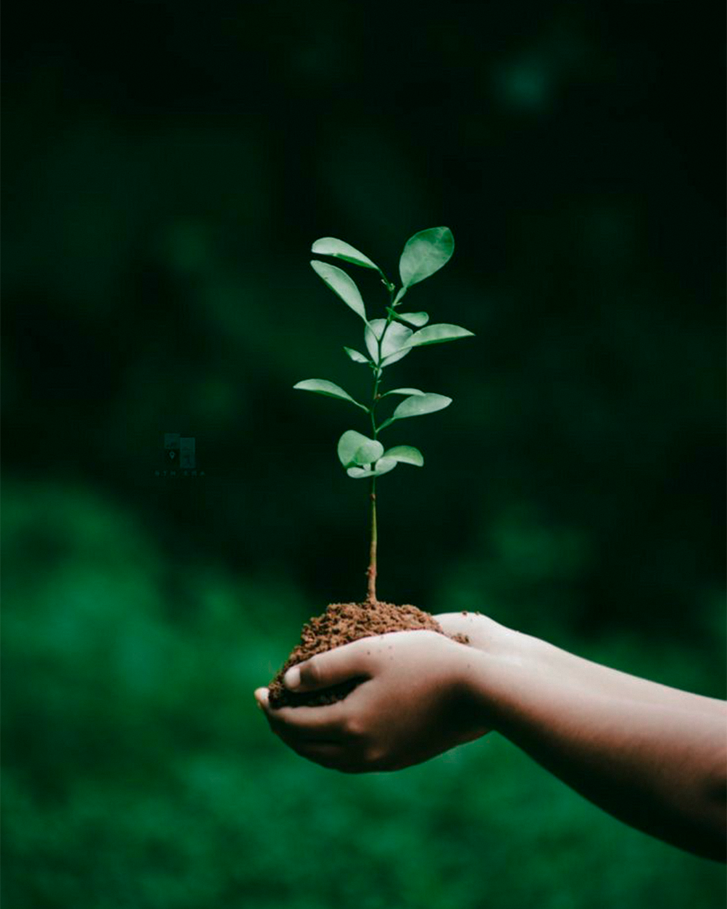
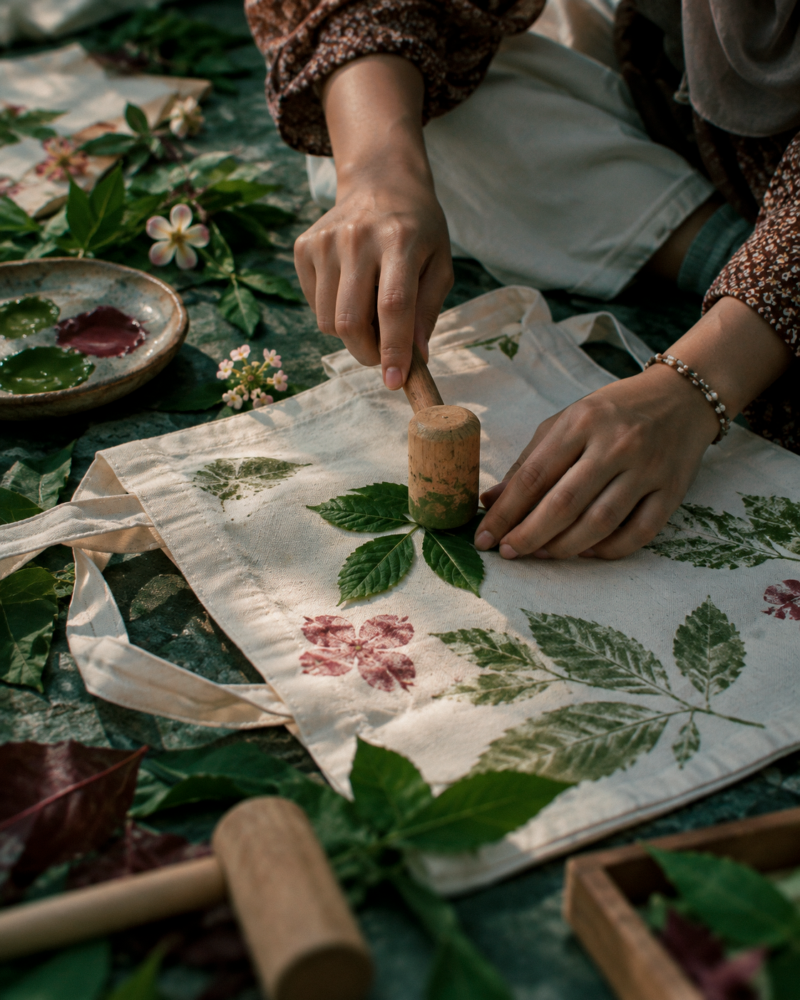
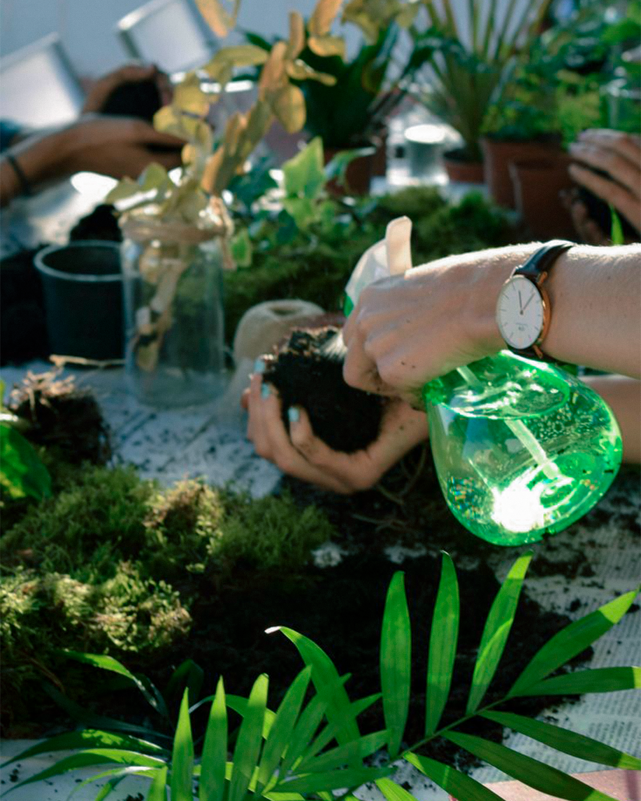
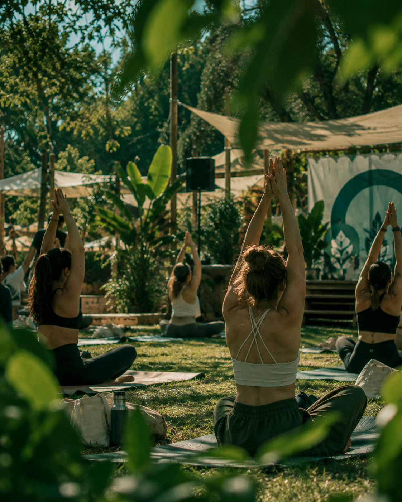
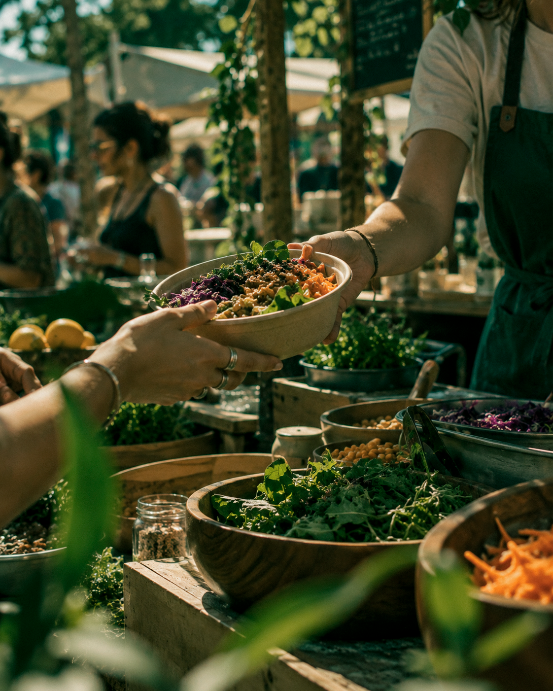
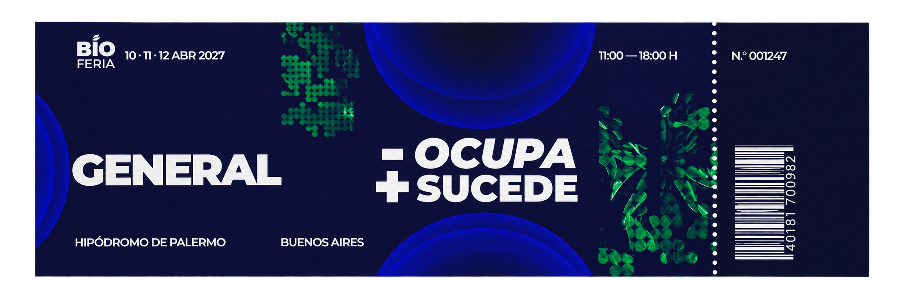

Descubrir
Conocé a las personas detrás de cada emprendimiento. Descubrí cómo se hacen los productos, qué materiales eligen y qué decisiones abren otras maneras de consumir.

Pequeñas decisiones. Nuevas posibilidades. Vení a descubrir una manera diferente de vivir, compartir y transformar.
01 / LA EXPERIENCIA
Bioferia es un punto de encuentro para explorar ideas, descubrir marcas, probar cosas nuevas y disfrutar un día distinto. No hace falta saber de sustentabilidad: solo tener ganas de venir.
Recorré la feria a tu ritmo, conversá con quienes crean nuevas alternativas y encontrá ideas para tu vida cotidiana. Entre una charla, algo rico y una canción, también hay tiempo para encontrarse.

Conocé a las personas detrás de cada emprendimiento. Descubrí cómo se hacen los productos, qué materiales eligen y qué decisiones abren otras maneras de consumir.

Acercate a un taller, hacé preguntas y probá algo por primera vez. Las experiencias participativas invitan a aprender haciendo, con propuestas para distintas edades e intereses.

Hacé una pausa para comer algo rico, escuchar música y compartir el día. Vení con amigos, en familia o por tu cuenta: siempre hay una nueva conversación por empezar.



Una conversación puede cambiar una costumbre. Un taller puede despertar una idea. Bioferia reúne esas pequeñas posibilidades en un mismo lugar, para que encuentres tu propia forma de empezar y te lleves algo que siga creciendo después del festival.
02 / TRES DÍAS PARA ENCONTRARNOS
Abrí el fin de semana con un recorrido por la feria y una agenda de invitados y conversaciones para descubrir a tu ritmo.
+ Toda la experiencia compartida de Bioferia.
VIERNES 2 DE ABRIL DE 2027Hacé lugar para un día de encuentros. A la propuesta compartida se suma una nueva selección de artistas, charlas y actividades.
+ Toda la experiencia compartida de Bioferia.
SÁBADO 3 DE ABRIL DE 2027Disfrutá el domingo entre sabores, ideas y música. La feria y los espacios de participación siguen presentes junto con los invitados de esta jornada.
+ Toda la experiencia compartida de Bioferia.
DOMINGO 4 DE ABRIL DE 202703 / ASEGURÁ TU LUGAR
Viví la feria, los sabores y la música en un día.
Con el pase de tres días, volvé por más actividades e invitados.

04 / LLEVATE ALGO DE BIOFERIA
Cinco piezas de edición especial. Elegí tu favorita.
UNA ACCIÓN

05 / ANTES DE VENIR
Respuestas rápidas para disfrutar la experiencia desde el primer momento.
HABLEMOS
Contanos qué te trae por acá y el equipo de Bioferia podrá conocer tu propuesta.
comercial@bioferia.info ↗